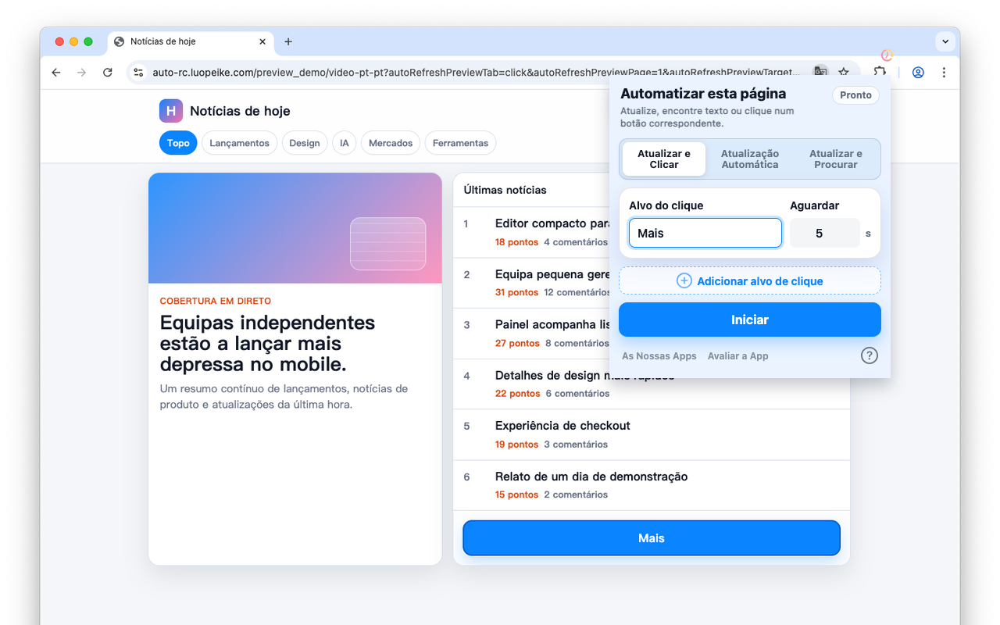

Atualizar páginas em intervalos personalizados
Defina um intervalo e mantenha as páginas importantes atualizadas no navegador.
Safari no iPhone, iPad e Mac · Chrome no computador
Atualize páginas por intervalo, clique em botões correspondentes e encontre alterações de texto.

Use para bilhetes, inventário, preços, estado de encomendas, painéis e outras páginas que precisa de verificar repetidamente.
Defina um intervalo e mantenha as páginas importantes atualizadas no navegador.
Procure botões como Buy, Next, Submit ou Reserve e clique automaticamente quando aparecerem.
Encontre texto de bilhetes, inventário, encomendas, preços e painéis após cada atualização.
As definições ficam no navegador. Não é necessária uma conta web.
• Chrome ou Edge no iPhone e iPad não instalam extensões; precisa de usar o Safari.
• Existe uma versão Safari desta extensão. Pesquise “Auto Refresh & Clicker” na App Store, ou encontre-a aqui Auto Refresh & Clicker. Custa $2.99 e pode ser usada nos seus dispositivos iOS e macOS.
• Devido a limitações do iOS, as extensões Safari só conseguem executar durante pouco tempo em segundo plano.
• Recomendamos usar em primeiro plano para melhores resultados.
1. Introduza os intervalos e palavras-chave;
2. Clique em “Start”;
3. Para outros intervalos ou palavras-chave, clique em “Stop” e repita.
1. Introduza o intervalo;
2. Clique em “Start”;
3. Para outro intervalo, clique em “Stop” e repita.
1. Introduza os intervalos e palavras-chave;
2. Clique em “Start”;
3. Para outros intervalos ou palavras-chave, clique em “Stop” e repita.